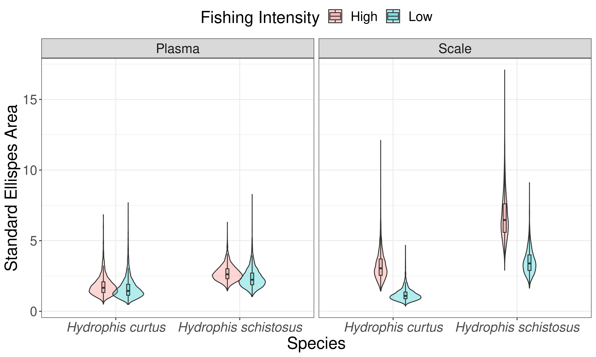

8 Does isotopic niche of sea snakes change with local fishing intensity?
It is infeasible to to find sites with little to no fishing pressure on mainland India. Hence, it is nigh impossible to conduct a study with controls and test sites with varying levels of fishing pressure.
How do you test the niche shift hypotheses with out spatial replicates?
While the control - test study design failed, fishing effort data was collected from multiple vessels (Gillnet and Trawlers) landing at the Malvan harbour over the period of 1.5 years along side diet, abundance (snakes and prey), and isotopic data. So we ask the following questions:
- Is there a corellation between fishing intensity and isotopic ratios?
- Do niche metrics (width, overlap) vary with fishing pressure (high, medium and low preiods during the year)?
What temporal resolution should be used for the analysis?
- Day, week, month or season.
Which is appropriate and why?
Depending on the tissue being analysed. Scales - month, Plasma - week
We used only plasma SI samples for this analysis as they reflect the isotopic assimilation in the short - term where effects of fisheries are expected.
8.1 Determining cluster of fishing intensity off the coast of sindhudurg
We used hierarchical clustering based on fishing intensity of both gears, and the position of the cell in the grid to divided the grid into high and low fishing intensity zones.
# loading required libraries
require(tidyverse)
library(sp)
library(raster)
# importing data
dep_int <- read.csv("./Data/Fishing intensity_dep.csv") # geocoded fishing effort
snakes_den <- read.csv("./Data/snakes-density.csv") # sea snake occurence in bycatch
ext <- raster::raster("./Data/sampling_extent.tif") # sampling grid
# importing required scripts
source("./Functions/intensity extract.R")
source("./Functions/raster to df.R")
# Calculating fishing intensity
fi <- dep_int%>%
group_by(Gear.Type)%>%
nest()%>%
mutate(m = map(data, ~map.extract(df = ., var = "effort", func = 'sum')),
mdf = map(m, map.df))%>%
dplyr::select(mdf)%>%
unnest()%>%
spread(Gear.Type, layer)
## creating distance matrix
dist_fi <- dist(fi)
## Hierarchical clustering
clust_fi <- hclust(dist_fi)
plot(clust_fi, hang = -1, labels = F)
## Assigning fishing intensity classes
fi_class <- cutree(clust_fi, k = 6) ## cutting the tree 4 times
## Naming clasess
fi <- fi%>%
# extracting classes from clustering
mutate(class = as.factor(ifelse(fi_class == 1 , "Low", "High")),
fic = fi_class
)%>%
# reordering classes
mutate(class = fct_relevel(class, c("High", "Medium", "Low")))## Plotting grid
ggplot(fi, aes(x, y, fill = class))+
geom_tile(col = "black")+
scale_fill_brewer(palette = "Set1", name = "Fishing intensity")+
labs(x = "Longitude", y = "Latitude")+
theme(text = element_text(size = 10))
Clustering may need to be revised based on sample size
8.2 Determining capture grid cell for individual snakes
Using data gathered from fisher surveys, we mapped the location of each fishing trip.
The protocol for geocoding fishing trips is as follows:
- Nearest landmarks are geocoded from google maps API
- Latitude is extracted from landmark geocode
- Match landmark latitude and depth from survey to GEBCO data
- Extract final longitude from GEBCO data
The protocol is encoded in Function/geocode.R
# importing stable isotope data
sia = read.csv("./Data/Stable Isotope Data_CEAS_final_191020.csv")
# joining sia data to snake data
sia_snakes = sia%>%
filter(Tissue.type == "Plasma" | Tissue.type == "Scales")%>%
left_join(snakes, 'Field.Code')%>%
mutate(Lab = "CEAS")%>%
rename(Delta.Carbon = d13C..vpdb. , Delta.Nitrogen = d15N..N2.air.)%>%
dplyr::select(Field.Code, Species, Snout.to.Vent..cm., Sex, Gravid, Class,
Gear.Type, Fishing.Location, Location.encountered, Depth.Caught..m.,
Plasma.Color, Delta.Carbon, Delta.Nitrogen, Lab,
Tissue.type, Month, Year)%>%
# using location encountered where fishing location is unavailable
mutate(Fishing.Location = ifelse(Fishing.Location == "", Location.encountered, Fishing.Location))%>%
mutate(Fishing.Location = ifelse(Fishing.Location == "Dandi" | Fishing.Location == "Dandi Beach", "Wayari", Fishing.Location))
#selecting relavant variables
sia_li = sia_snakes%>%
dplyr::select(Field.Code, Species, Fishing.Location, Depth.Caught..m.,Tissue.type,
Delta.Carbon, Delta.Nitrogen)%>%
filter(Fishing.Location != "")%>%
drop_na()%>%
droplevels()
## Geocoding si data
source("./Functions/geocode.R")
sia_li <- geocode.trips(sia_li, fl = 'Fishing.Location', dep = 'Depth.Caught..m.')
## removing duplicates introduced by fuzzy joining
sia_li <- distinct(sia_li, Field.Code, Tissue.type, .keep_all = T)
## Assigning grid cells to snakes
source("./Functions/find cell.R") # importing cell.ext function
ext <- raster::raster("./Data/sampling_extent.tif") # sampling grid
sia_fi <- sia_li%>%
group_by(Field.Code, Species, Tissue.type, Delta.Carbon, Delta.Nitrogen)%>%
nest()%>%
mutate(cell = map(data, cell.ext),
celldf = map(cell, as.data.frame))%>%
dplyr::select(celldf)%>%
unnest()%>%
ungroup()
## Saving data to save time
write.csv(sia_li, "./Data/SIA_fishing intensity.csv")Note: fuzzyjoin::fuzzy_inner_join() introduces many duplicates, I have not as yet been able to fix the issue dirrectly. Currently, removing duplicates from output using dplyr::distinct().
8.3 Sample size
# adding fishing intensity class
sia_li <- sia_fi%>%
left_join(fi, c("x","y"))%>%
mutate(intensity = GillNet + Trawler)
# summarising number of samples
table(sia_li$Species, sia_li$Tissue.type, sia_li$class)%>%
as.data.frame()%>%
spread(Var3, Freq)%>%
rename(Species = Var1,
Tissue = Var2)%>%
arrange(Species, Tissue)| Species | Tissue | High | Low |
|---|---|---|---|
| Hydrophis curtus | Plasma | 9 | 7 |
| Hydrophis curtus | Scales | 13 | 10 |
| Hydrophis schistosus | Plasma | 26 | 14 |
| Hydrophis schistosus | Scales | 19 | 17 |
8.4 Variation isotope ratio with fishing intensity
# plotting
sia_li%>%
gather(key = Isotope, c(Delta.Carbon, Delta.Nitrogen), value = ratio)%>%
ggplot(aes(intensity, ratio, col = Species))+
geom_point(size = 3)+
geom_smooth(method = lm)+
scale_color_brewer(palette = "Set1")+
labs(x = "Fishing intensity", y = "Isotope ratio")+
theme(legend.text = element_text(face = "italic"))+
facet_grid(Isotope ~ Tissue.type, scale = "free_y")Both \(\delta^{15}N\) and \(\delta^{13}C\) show strong negatice relationship with increasing fishing intensity.
Update with new SI data
8.5 Modeling isotope ratios with fishing intensity
sia_li%>%
gather(key = Isotope, c(Delta.Carbon, Delta.Nitrogen), value = ratio)%>%
group_by(Species, Isotope, Tissue.type)%>%
nest()%>%
mutate(
mod1 = map(data, ~lm(ratio ~ intensity, data = .)),
summ1 = map(mod1, broom::tidy),
r2 = map(mod1, broom::glance)
)%>%
dplyr::select(summ1, r2)%>%
unnest()%>%
dplyr::select(Species:p.value, adj.r.squared)%>%
arrange(Species, Tissue.type, adj.r.squared) -> sia_fi_lm
library(knitr)
library(kableExtra)
sia_fi_lm <- sia_fi_lm%>%
rename(`Tissue type` = Tissue.type,
Parameter = term,
Coefficient = estimate,
`Standard Error` = std.error,
`T` = statistic,
p = p.value,
`r_adj^2` = adj.r.squared
)%>%
mutate(Parameter = ifelse(Parameter == "(Intercept)", "Intercept", "Fishing intensity"),
`T` = ifelse(Parameter == "Intercept", NA, `T`),
p = ifelse(Parameter == "Intercept", NA, p))
kbl(sia_fi_lm, booktabs = T, digits = 3)%>%
column_spec(1, italic = T)%>%
collapse_rows(columns = 1:3, row_group_label_position ='stack')| Species | Tissue type | Isotope | Parameter | Coefficient | Standard Error | T | p | r_adj^2 |
|---|---|---|---|---|---|---|---|---|
| Hydrophis curtus | Plasma | Delta.Nitrogen | Intercept | 13.865 | 0.234 | -0.021 | ||
| Hydrophis curtus | Plasma | Delta.Nitrogen | Fishing intensity | -0.003 | 0.003 | -0.834 | 0.418 | -0.021 |
| Hydrophis curtus | Plasma | Delta.Carbon | Intercept | -15.664 | 0.404 | 0.374 | ||
| Hydrophis curtus | Plasma | Delta.Carbon | Fishing intensity | -0.017 | 0.006 | -3.154 | 0.007 | 0.374 |
| Hydrophis curtus | Scales | Delta.Nitrogen | Intercept | 14.330 | 0.295 | -0.048 | ||
| Hydrophis curtus | Scales | Delta.Nitrogen | Fishing intensity | 0.000 | 0.003 | -0.014 | 0.989 | -0.048 |
| Hydrophis curtus | Scales | Delta.Carbon | Intercept | -15.011 | 0.325 | -0.004 | ||
| Hydrophis curtus | Scales | Delta.Carbon | Fishing intensity | 0.003 | 0.004 | 0.957 | 0.349 | -0.004 |
| Hydrophis schistosus | Plasma | Delta.Nitrogen | Intercept | 14.684 | 0.260 | -0.025 | ||
| Hydrophis schistosus | Plasma | Delta.Nitrogen | Fishing intensity | 0.001 | 0.004 | 0.195 | 0.846 | -0.025 |
| Hydrophis schistosus | Plasma | Delta.Carbon | Intercept | -16.577 | 0.256 | -0.024 | ||
| Hydrophis schistosus | Plasma | Delta.Carbon | Fishing intensity | -0.001 | 0.004 | -0.295 | 0.770 | -0.024 |
| Hydrophis schistosus | Scales | Delta.Nitrogen | Intercept | 14.919 | 0.356 | -0.028 | ||
| Hydrophis schistosus | Scales | Delta.Nitrogen | Fishing intensity | -0.001 | 0.006 | -0.191 | 0.850 | -0.028 |
| Hydrophis schistosus | Scales | Delta.Carbon | Intercept | -14.177 | 0.365 | 0.012 | ||
| Hydrophis schistosus | Scales | Delta.Carbon | Fishing intensity | -0.007 | 0.006 | -1.193 | 0.241 | 0.012 |
Samples sizes for H. curtus are low, however, fishing intensity seems to have a significant depletion effect on plasma isotope ratios in H. schistosus.
8.6 Difference in niche width between sea snakes
See section 4 for more details on analysis with SIBER.
# Loading required libraries
library(SIBER)
#Creating siber data
## Plasma samples
siber_pl_fi = sia_li%>%
filter(Tissue.type == "Plasma")%>% # using plasma values for comparison
dplyr::select(Delta.Carbon, Delta.Nitrogen, Species, class)%>%
# renaming baed on SIBER conventions
rename(iso1 = Delta.Carbon,
iso2 = Delta.Nitrogen,
group = class, # setting fishing intesnity as group
community = Species)%>%
# removing missing data
filter(!is.na(group),
!is.na(iso1),
!is.na(iso2),
community == "Hydrophis schistosus" | community == "Hydrophis curtus")%>%
ungroup()%>%
dplyr::select(iso1, iso2, group, community)%>%
droplevels()
# Creating SIBER object fo MVN fitting
siber.plasma.fi = createSiberObject(as.data.frame(siber_pl_fi))
## Scale samples
siber_sc_fi = sia_li%>%
filter(Tissue.type == "Scales")%>% # using plasma values for comparison
dplyr::select(Delta.Carbon, Delta.Nitrogen, Species, class)%>%
# renaming baed on SIBER conventions
rename(iso1 = Delta.Carbon,
iso2 = Delta.Nitrogen,
group = class, # setting fishing intesnity as group
community = Species)%>%
# removing missing data
filter(!is.na(group),
!is.na(iso1),
!is.na(iso2),
community == "Hydrophis schistosus" | community == "Hydrophis curtus")%>%
ungroup()%>%
dplyr::select(iso1, iso2, group, community)%>%
droplevels()
# Creating SIBER object fo MVN fitting
siber.scales.fi = createSiberObject(as.data.frame(siber_sc_fi))8.6.1 Maximum likelihood estimate of SEA
SEA.ML_plasma.fi <- groupMetricsML(siber.plasma.fi)# for plamsa samples
SEA.ML_scales.fi <- groupMetricsML(siber.scales.fi)# for scale samples
data.frame(t(SEA.ML_plasma.fi))%>%
rownames_to_column("Species.FI")%>%
mutate(Tissue = "Plasma")%>%
full_join(
(data.frame(t(SEA.ML_scales.fi))%>%
rownames_to_column("Species.FI")%>%
mutate(Tissue = "Scales")
)
)%>%
group_by(Tissue)%>%
arrange(Species.FI)| Species.FI | TA | SEA | SEAc | Tissue |
|---|---|---|---|---|
| Hydrophis curtus.High | 2.75500 | 1.589387 | 1.816443 | Plasma |
| Hydrophis curtus.High | 6.65860 | 2.920519 | 3.186021 | Scales |
| Hydrophis curtus.Low | 2.11300 | 1.391784 | 1.670141 | Plasma |
| Hydrophis curtus.Low | 2.27960 | 1.026595 | 1.154919 | Scales |
| Hydrophis schistosus.High | 9.22790 | 2.594212 | 2.702304 | Plasma |
| Hydrophis schistosus.High | 22.84530 | 6.363402 | 6.737720 | Scales |
| Hydrophis schistosus.Low | 5.47320 | 2.130937 | 2.308515 | Plasma |
| Hydrophis schistosus.Low | 9.65475 | 3.265380 | 3.483072 | Scales |
As maximum likelihood can only porivde point estimates of SEA, a bayesian model was used to provide more robust comparison of niche width.
8.6.2 Bayesian estimate of SEA
# options for running jags
parms <- list()
parms$n.iter <- 2 * 10^4 # number of iterations to run the model for
parms$n.burnin <- 1 * 10^3 # discard the first set of values
parms$n.thin <- 10 # thin the posterior by this many
parms$n.chains <- 2 # run this many chains
# define the priors
priors <- list()
priors$R <- 1 * diag(2)
priors$k <- 2
priors$tau.mu <- 1.0E-3
# scale samples
scales.fi.post <- siberMVN(siber.scales.fi,
parms, priors)#fitting multivariate normal model and getting posteriors
SEA.B_scales.fi <- siberEllipses(scales.fi.post)#estimating standard ellipse area from posteriors
means.B_scales.fi <- extractPosteriorMeans(siber.scales.fi, scales.fi.post)#mean isotope values
ccc <- names(scales.fi.post)
colnames(SEA.B_scales.fi) <- ccc
# plasma samples
plasma.fi.post <- siberMVN(siber.plasma.fi,
parms, priors)#fitting multivariate normal model and getting posteriors
SEA.B_plasma.fi <- siberEllipses(plasma.fi.post)#estimating standard ellipse area from posteriors
means.B_plasma.fi <- extractPosteriorMeans(siber.plasma.fi, plasma.fi.post)#mean isotope values
ccc <- names(plasma.fi.post)
colnames(SEA.B_plasma.fi) <- ccc
# creating data frame
SEA.B_snakes.fi.df = data.frame(SEA.B_plasma.fi, check.names = F)%>%
rowid_to_column(var = "run")%>%
gather(Species.class, SEA.B, -run)%>%
separate(Species.class, c("Species","FI.Class"), sep = "([\\.\\?\\:])")%>%
mutate(Tissue = "Plasma")%>%
# appending scale runs
full_join(
data.frame(SEA.B_scales.fi, check.names = F)%>%
rowid_to_column(var = "run")%>%
gather(Species.class, SEA.B, -run)%>%
separate(Species.class, c("Species","FI.Class"), sep = "([\\.\\?\\:])")%>%
mutate(Tissue = "Scale")
)#Summarising SEA estimates
SEA.B_snakes.fi.df%>%
group_by(Species, Tissue, FI.Class)%>%
summarise(SEA.mean = mean(SEA.B),
SEA.sd = sd(SEA.B),
SEA.se = sd(SEA.B)/sqrt(n()))| Species | Tissue | FI.Class | SEA.mean | SEA.sd | SEA.se |
|---|---|---|---|---|---|
| Hydrophis curtus | Plasma | High | 1.788483 | 0.6869770 | 0.0108621 |
| Hydrophis curtus | Plasma | Low | 1.626508 | 0.7085644 | 0.0112034 |
| Hydrophis curtus | Scale | High | 3.239154 | 0.9866714 | 0.0156006 |
| Hydrophis curtus | Scale | Low | 1.171296 | 0.4196977 | 0.0066360 |
| Hydrophis schistosus | Plasma | High | 2.694940 | 0.5553885 | 0.0087815 |
| Hydrophis schistosus | Plasma | Low | 2.337265 | 0.6643596 | 0.0105044 |
| Hydrophis schistosus | Scale | High | 6.730346 | 1.6167906 | 0.0255637 |
| Hydrophis schistosus | Scale | Low | 3.487659 | 0.9051413 | 0.0143115 |
8.6.3 Testing difference in species niche area by fishing intensity
SEA.B_snakes.fi.df%>%
spread(key = FI.Class, value = SEA.B)%>%
group_by(Species, Tissue)%>%
summarise(`P(High > Low)` = sum(`High` > `Low`)/n())| Species | Tissue | P(High > Low) |
|---|---|---|
| Hydrophis curtus | Plasma | 0.58950 |
| Hydrophis curtus | Scale | 0.98925 |
| Hydrophis schistosus | Plasma | 0.68625 |
| Hydrophis schistosus | Scale | 0.97550 |
#Currently no medium cells
#`P(Medium > Low)` = sum(`Medium` > `Low`)/n(),
#`P(High > Medium)` = sum(`High` > `Medium`)/n())8.6.4 Visualising difference in niche width across gradiet of fishing intensity
library(gridExtra)
SEA.B_snakes.fi.df%>%
# reordering classes
mutate(FI.Class = fct_relevel(FI.Class, c("High", "Medium", "Low")))%>%
ggplot(aes(Species, SEA.B, fill = FI.Class))+
geom_violin(alpha = 0.3, position = position_dodge(0.4), width = 0.5)+
geom_boxplot(alpha = 0.3, width = 0.05, outlier.alpha = 0, position = position_dodge(0.4))+
scale_y_continuous(name = "Standard Ellispes Area", guide = guide_axis(n.dodge = 1))+
scale_fill_discrete(name = "Fishing Intensity")+
facet_wrap(~Tissue)+
theme(axis.text.x = element_text(face = "italic"))
ggsave(last_plot(), filename = "./Figures and Tables/figure6.png", height = 6, width = 10, device = "png")Currently many outliers from 5 - 15 on y - axis